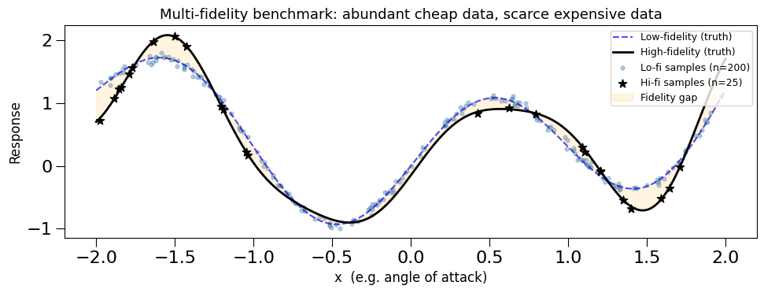
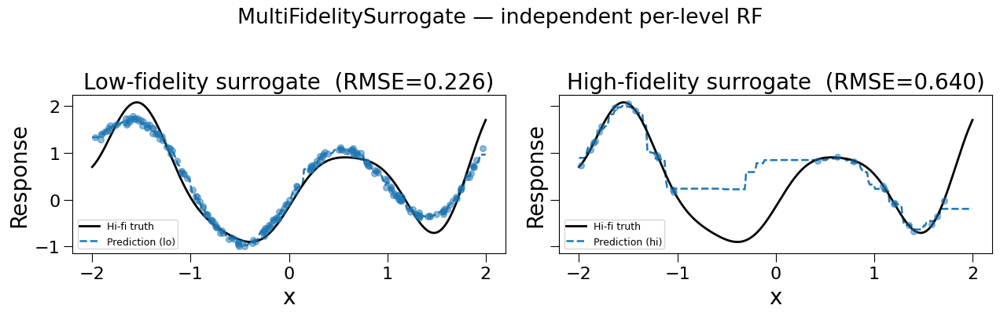
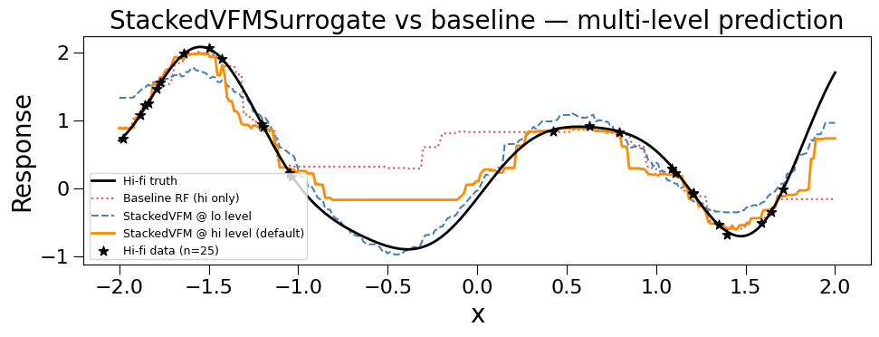
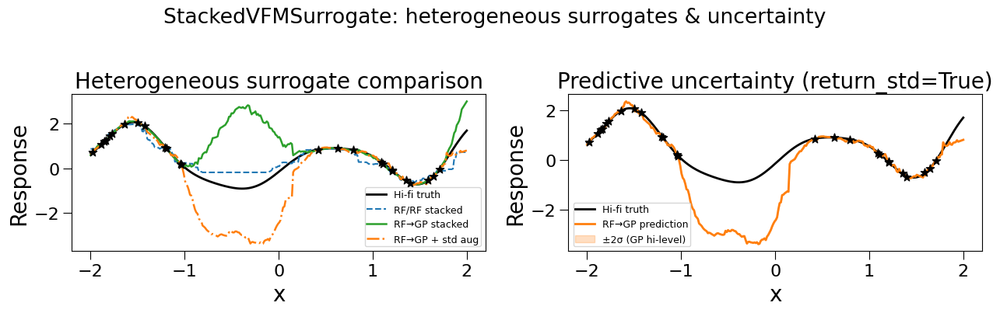
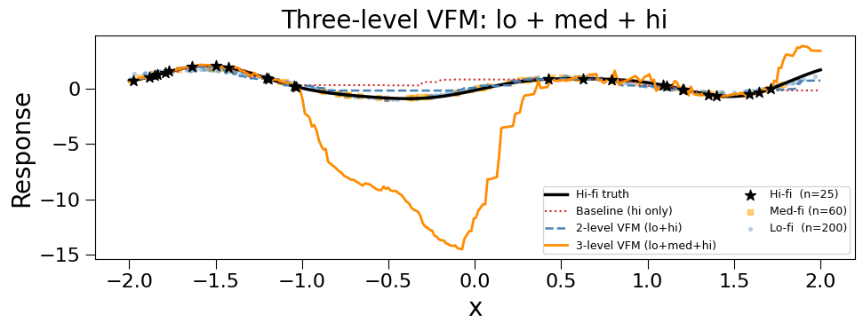
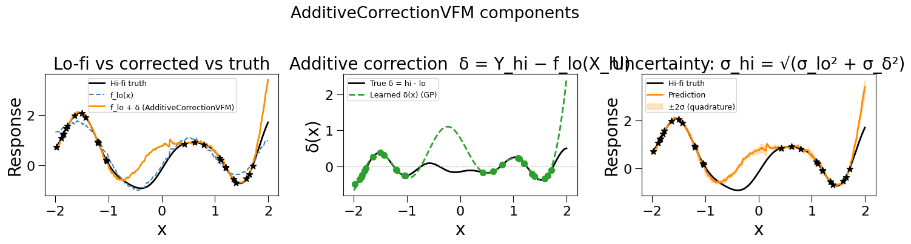
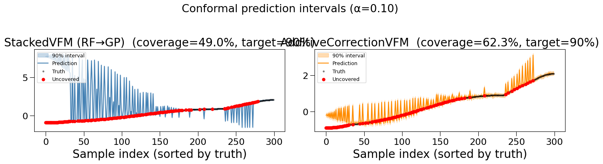
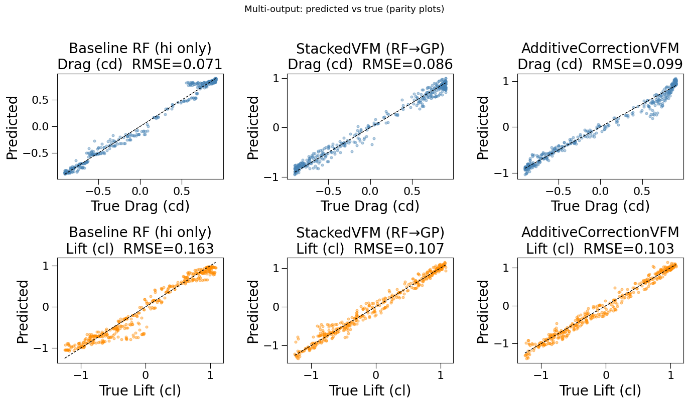
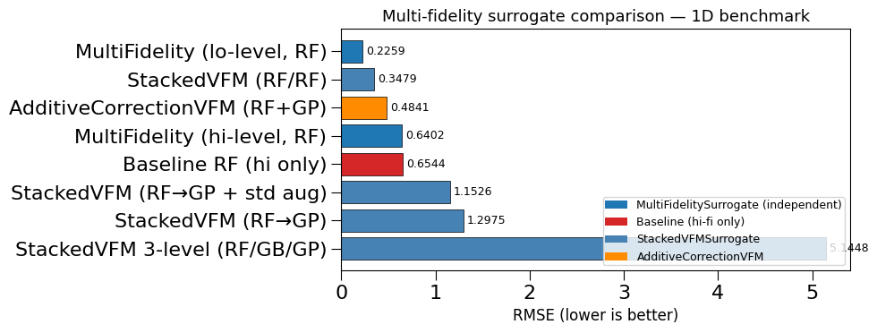

Multi-Fidelity Surrogate Modeling¶
What this tutorial covers:
Many engineering workflows involve simulators or experiments that can be run at different fidelity levels — from fast, inaccurate approximations to slow, high-accuracy runs. Multi-fidelity modeling combines data from all levels to build a surrogate that achieves the accuracy of the expensive high-fidelity source while requiring far fewer expensive evaluations.
multioutreg ships three multi-fidelity classes:
Class |
Approach |
Levels |
Cross-fidelity coupling |
|---|---|---|---|
|
Independent per-level surrogates |
≥ 1 |
None (baseline) |
|
Recursive feature augmentation (Perdikaris et al. 2017) |
≥ 2 |
Full nonlinear |
|
Additive correction f_hi = f_lo + δ (Kennedy & O’Hagan 2000) |
2 |
Additive |
All three inherit ConformalMixin, so distribution-free prediction intervals via wrap_conformal / conformal_predict are always available.
Contents¶
Motivation & data generation
MultiFidelitySurrogate — independent per-level baseline
StackedVFMSurrogate — nonlinear cross-fidelity coupling
Heterogeneous surrogates and uncertainty augmentation
Three-level VFM
AdditiveCorrectionVFM — Kennedy-O’Hagan style
Conformal prediction intervals
Multi-output example
Model comparison
When to use which class
[22]:
import numpy as np
import matplotlib.pyplot as plt
import matplotlib.gridspec as gridspec
from sklearn.model_selection import train_test_split
import warnings
warnings.filterwarnings('ignore')
from multioutreg.surrogates import (
MultiFidelitySurrogate,
StackedVFMSurrogate,
AdditiveCorrectionVFM,
RandomForestSurrogate,
GaussianProcessSurrogate,
GradientBoostingSurrogate,
LinearRegressionSurrogate,
BayesianRidgeSurrogate,
)
rng = np.random.default_rng(42)
def rmse(y_true, y_pred):
"""Root mean squared error, returns one value per output column."""
return np.sqrt(np.mean((y_true - y_pred) ** 2, axis=0))
## 1. Motivation & Data Generation
We simulate a one-dimensional aerodynamic drag coefficient benchmark where:
Low-fidelity (panel method): fast, 200 cheap evaluations available.
\[c_{d,lo}(x) = \sin(\pi x) + 0.3 x^2\]High-fidelity (RANS CFD): slow, only 25 expensive evaluations available.
\[c_{d,hi}(x) = c_{d,lo}(x) + 0.25\, x \cos(2\pi x) - 0.15 e^{-4x^2}\]
The ground truth is the high-fidelity function; the goal is to learn it accurately using mostly low-fidelity data.
[2]:
def lo_fi(x):
"""Low-fidelity response (fast, inaccurate)."""
return np.sin(np.pi * x) + 0.3 * x**2
def hi_fi(x):
"""High-fidelity response (slow, accurate)."""
return lo_fi(x) + 0.25 * x * np.cos(2 * np.pi * x) - 0.15 * np.exp(-4 * x**2)
# --- Generate data ---
N_LO = 200 # cheap samples
N_HI = 25 # expensive samples
X_lo = rng.uniform(-2, 2, (N_LO, 1))
Y_lo = lo_fi(X_lo) + rng.normal(0, 0.04, (N_LO, 1)) # small observation noise
X_hi = rng.uniform(-2, 2, (N_HI, 1))
Y_hi = hi_fi(X_hi) + rng.normal(0, 0.02, (N_HI, 1)) # tiny observation noise
# Dense test grid for plotting
X_test = np.linspace(-2, 2, 300).reshape(-1, 1)
Y_test = hi_fi(X_test)
print(f"Low-fidelity: {N_LO} samples (cheap)")
print(f"High-fidelity: {N_HI} samples (expensive)")
Low-fidelity: 200 samples (cheap)
High-fidelity: 25 samples (expensive)
[3]:
fig, ax = plt.subplots(figsize=(10, 4))
ax.plot(X_test, lo_fi(X_test), 'b--', lw=1.5, label='Low-fidelity (truth)', alpha=0.7)
ax.plot(X_test, hi_fi(X_test), 'k-', lw=2.0, label='High-fidelity (truth)')
ax.scatter(X_lo, Y_lo, s=12, c='steelblue', alpha=0.4, label=f'Lo-fi samples (n={N_LO})')
ax.scatter(X_hi, Y_hi, s=60, c='k', marker='*', zorder=5, label=f'Hi-fi samples (n={N_HI})')
ax.fill_between(X_test.ravel(),
lo_fi(X_test).ravel(),
hi_fi(X_test).ravel(),
alpha=0.12, color='orange', label='Fidelity gap')
ax.set_xlabel('x (e.g. angle of attack)', fontsize=12)
ax.set_ylabel('Response', fontsize=12)
ax.set_title('Multi-fidelity benchmark: abundant cheap data, scarce expensive data', fontsize=13)
ax.legend(fontsize=9, loc='upper right')
plt.tight_layout()
plt.show()

The orange shaded region is the fidelity gap — the systematic bias that the low-fidelity model introduces. A naive surrogate trained only on the 25 high-fidelity points will overfit; multi-fidelity models use the abundant low-fidelity data to regularise and improve the fit.
## 2. MultiFidelitySurrogate — Independent Per-Level Baseline
MultiFidelitySurrogate is the simplest multi-fidelity class: it fits a completely independent surrogate at each fidelity level. There is no cross-fidelity information transfer — each surrogate sees only its own level’s data.
It is useful as a baseline and for workflows where you simply want to query any level at prediction time with a single object.
MultiFidelitySurrogate(
surrogate_cls, # class used to instantiate a surrogate per level
fidelity_levels, # ordered list of level names
)
Fit via a dict {level: (X, Y)}; predict by specifying a level= keyword.
[4]:
data = {"lo": (X_lo, Y_lo), "hi": (X_hi, Y_hi)}
mfs = MultiFidelitySurrogate(
surrogate_cls=RandomForestSurrogate,
fidelity_levels=["lo", "hi"],
)
mfs.fit(data)
Y_mfs_lo = mfs.predict(X_test, level="lo")
Y_mfs_hi = mfs.predict(X_test, level="hi")
print("MultiFidelity (RF) — independent surrogates")
print(f" Lo-level RMSE vs hi-fi truth: {rmse(Y_test, Y_mfs_lo).item():.4f}")
print(f" Hi-level RMSE vs hi-fi truth: {rmse(Y_test, Y_mfs_hi).item():.4f}")
print()
print("Note: hi-level trained only on 25 points → may overfit or underfit.")
print("Note: lo-level captures lo-fi trend, not the true hi-fi response.")
MultiFidelity (RF) — independent surrogates
Lo-level RMSE vs hi-fi truth: 0.2259
Hi-level RMSE vs hi-fi truth: 0.6402
Note: hi-level trained only on 25 points → may overfit or underfit.
Note: lo-level captures lo-fi trend, not the true hi-fi response.
[5]:
fig, axes = plt.subplots(1, 2, figsize=(13, 4), sharey=True)
for ax, (level, Y_pred, label) in zip(axes, [
("lo", Y_mfs_lo, "Low-fidelity surrogate"),
("hi", Y_mfs_hi, "High-fidelity surrogate"),
]):
ax.plot(X_test, Y_test, 'k-', lw=2, label='Hi-fi truth', zorder=3)
ax.plot(X_test, Y_pred, 'tab:blue', lw=1.8, ls='--', label=f'Prediction ({level})')
ax.scatter(X_lo if level == 'lo' else X_hi,
Y_lo if level == 'lo' else Y_hi,
s=30, c='tab:blue', alpha=0.5, zorder=4)
ax.set_xlabel('x'); ax.set_ylabel('Response')
ax.set_title(f'{label} (RMSE={rmse(Y_test, Y_pred).item():.3f})')
ax.legend(fontsize=9)
plt.suptitle('MultiFidelitySurrogate — independent per-level RF', y=1.02)
plt.tight_layout()
plt.show()

Takeaway: The hi-level surrogate trained on only 25 points is noisy. The lo-level is smooth but biased. Neither exploits the complementary information from the other level.
## 3. StackedVFMSurrogate — Nonlinear Cross-Fidelity Coupling
StackedVFMSurrogate implements the recursive feature-augmentation approach from Perdikaris et al. (2017). At each fidelity level \(k > 0\) the input features are augmented with all lower-level surrogate predictions before fitting:
This allows the high-fidelity surrogate to learn a nonlinear correction over the lower-fidelity predictions.
StackedVFMSurrogate(
fidelity_levels, # ordered list, lowest → highest
surrogate_cls, # one class or list (heterogeneous per level)
surrogate_params, # dict or list of dicts
augment_with_std, # bool — also augment with predicted stds
)
Fit via model.fit({"lo": (X_lo, Y_lo), "hi": (X_hi, Y_hi)}).
[6]:
# Default: Random Forest at every level
stacked = StackedVFMSurrogate(
fidelity_levels=["lo", "hi"],
)
stacked.fit(data)
Y_stacked = stacked.predict(X_test)
# Baseline: RF trained on hi-fi only (no cross-fidelity)
baseline_hi = RandomForestSurrogate()
baseline_hi.fit(X_hi, Y_hi)
Y_baseline = baseline_hi.predict(X_test)
print("Feature count after augmentation:")
for level, n in stacked.augmented_n_features_per_level_.items():
print(f" Level '{level}': {n} features")
print()
print(f"Baseline RF (hi only, n=25) RMSE: {rmse(Y_test, Y_baseline).item():.4f}")
print(f"StackedVFM (RF/RF) RMSE: {rmse(Y_test, Y_stacked).item():.4f}")
Feature count after augmentation:
Level 'lo': 1 features
Level 'hi': 2 features
Baseline RF (hi only, n=25) RMSE: 0.6544
StackedVFM (RF/RF) RMSE: 0.3479
[7]:
# You can also predict at any intermediate fidelity level
Y_at_lo = stacked.predict(X_test, level="lo")
Y_at_hi = stacked.predict(X_test, level="hi") # same as default
fig, ax = plt.subplots(figsize=(10, 4))
ax.plot(X_test, Y_test, 'k-', lw=2, label='Hi-fi truth', zorder=4)
ax.plot(X_test, Y_baseline, 'tab:red', lw=1.5, ls=':', label='Baseline RF (hi only)', alpha=0.8)
ax.plot(X_test, Y_at_lo, 'steelblue', lw=1.5, ls='--', label='StackedVFM @ lo level')
ax.plot(X_test, Y_at_hi, 'darkorange', lw=2, label='StackedVFM @ hi level (default)')
ax.scatter(X_hi, Y_hi, s=60, c='k', marker='*', zorder=5, label=f'Hi-fi data (n={N_HI})')
ax.set_xlabel('x'); ax.set_ylabel('Response')
ax.set_title('StackedVFMSurrogate vs baseline — multi-level prediction')
ax.legend(fontsize=9)
plt.tight_layout()
plt.show()

Key insight: The stacked model’s hi-level prediction inherits the smoothness from the abundant low-fidelity data while correcting the bias using the sparse high-fidelity observations.
## 4. Heterogeneous Surrogates and Uncertainty Augmentation
A natural choice is a fast surrogate at the low-fidelity level (e.g. RF) and a smooth, uncertainty-aware surrogate at the high-fidelity level (e.g. GP). Pass lists to surrogate_cls and surrogate_params to use different models per level.
Setting augment_with_std=True also passes the predicted standard deviation of level \(k\) as an extra feature for level \(k+1\), allowing the high-fidelity surrogate to downweight regions where the low-fidelity surrogate is uncertain.
[8]:
# RF (lo) → GP (hi)
stacked_rf_gp = StackedVFMSurrogate(
fidelity_levels=["lo", "hi"],
surrogate_cls=[RandomForestSurrogate, GaussianProcessSurrogate],
surrogate_params=[{"n_estimators": 100}, {"alpha": 1e-6}],
)
stacked_rf_gp.fit(data)
Y_rf_gp = stacked_rf_gp.predict(X_test)
# RF (lo) → GP (hi) + std augmentation
stacked_std = StackedVFMSurrogate(
fidelity_levels=["lo", "hi"],
surrogate_cls=[RandomForestSurrogate, GaussianProcessSurrogate],
surrogate_params=[{"n_estimators": 100}, {"alpha": 1e-6}],
augment_with_std=True,
)
stacked_std.fit(data)
Y_std_pred, Y_std_unc = stacked_std.predict(X_test, return_std=True)
print("Augmented features with std augmentation:", stacked_std.augmented_n_features_per_level_)
print(" (lo: 1 feature, hi: 1 original + 1 lo-pred + 1 lo-std = 3 features)")
print()
print(f"RF/RF stacked RMSE: {rmse(Y_test, Y_stacked).item():.4f}")
print(f"RF→GP stacked RMSE: {rmse(Y_test, Y_rf_gp).item():.4f}")
print(f"RF→GP + std augment RMSE: {rmse(Y_test, Y_std_pred).item():.4f}")
Augmented features with std augmentation: {'lo': 1, 'hi': 3}
(lo: 1 feature, hi: 1 original + 1 lo-pred + 1 lo-std = 3 features)
RF/RF stacked RMSE: 0.3479
RF→GP stacked RMSE: 1.2975
RF→GP + std augment RMSE: 1.1526
[9]:
fig, axes = plt.subplots(1, 2, figsize=(13, 4))
# Left: predictions
ax = axes[0]
ax.plot(X_test, Y_test, 'k-', lw=2, label='Hi-fi truth')
ax.plot(X_test, Y_stacked, 'tab:blue', lw=1.5, ls='--', label='RF/RF stacked')
ax.plot(X_test, Y_rf_gp, 'tab:green', lw=1.8, label='RF→GP stacked')
ax.plot(X_test, Y_std_pred, 'tab:orange', lw=1.8, ls='-.', label='RF→GP + std aug')
ax.scatter(X_hi, Y_hi, s=60, c='k', marker='*', zorder=5)
ax.set_xlabel('x'); ax.set_ylabel('Response')
ax.set_title('Heterogeneous surrogate comparison')
ax.legend(fontsize=9)
# Right: GP predictive uncertainty from the high-level model
ax = axes[1]
ax.plot(X_test, Y_test, 'k-', lw=2, label='Hi-fi truth')
ax.plot(X_test, Y_std_pred, 'tab:orange', lw=2, label='RF→GP prediction')
ax.fill_between(X_test.ravel(),
(Y_std_pred - 2 * Y_std_unc).ravel(),
(Y_std_pred + 2 * Y_std_unc).ravel(),
alpha=0.25, color='tab:orange', label='±2σ (GP hi-level)')
ax.scatter(X_hi, Y_hi, s=60, c='k', marker='*', zorder=5)
ax.set_xlabel('x'); ax.set_ylabel('Response')
ax.set_title('Predictive uncertainty (return_std=True)')
ax.legend(fontsize=9)
plt.suptitle('StackedVFMSurrogate: heterogeneous surrogates & uncertainty', y=1.02)
plt.tight_layout()
plt.show()

Note on ``return_std=True``: Only the intrinsic std of the highest-level surrogate is returned. Uncertainty accumulated through lower-level predictions is not analytically propagated (this would require Monte Carlo sampling). For calibrated intervals use
conformal_predict(Section 7).
## 5. Three-Level VFM
StackedVFMSurrogate generalises naturally to any number of levels. The feature augmentation chain is applied recursively: level 2 sees [X | pred_0 | pred_1], level 3 sees [X | pred_0 | pred_1 | pred_2], and so on.
Here we add a medium-fidelity tier (e.g. RANS with coarser grid) between the cheap panel method and the expensive high-fidelity CFD.
[10]:
def med_fi(x):
"""Medium-fidelity response — closer to hi-fi than lo-fi, but cheaper."""
return lo_fi(x) + 0.12 * x * np.cos(2 * np.pi * x)
N_MED = 60
X_med = rng.uniform(-2, 2, (N_MED, 1))
Y_med = med_fi(X_med) + rng.normal(0, 0.03, (N_MED, 1))
data_3 = {
"lo": (X_lo, Y_lo),
"med": (X_med, Y_med),
"hi": (X_hi, Y_hi),
}
stacked_3 = StackedVFMSurrogate(
fidelity_levels=["lo", "med", "hi"],
surrogate_cls=[
RandomForestSurrogate, # lo: fast and plentiful
GradientBoostingSurrogate, # med: moderate cost
GaussianProcessSurrogate, # hi: smooth GP correction
],
)
stacked_3.fit(data_3)
Y_3 = stacked_3.predict(X_test)
print("Sample counts: lo=%d, med=%d, hi=%d" % (N_LO, N_MED, N_HI))
print("Augmented feature sizes:", stacked_3.augmented_n_features_per_level_)
print()
print(f"Baseline RF (hi only) RMSE: {rmse(Y_test, Y_baseline).item():.4f}")
print(f"StackedVFM 2-level (RF/RF) RMSE: {rmse(Y_test, Y_stacked).item():.4f}")
print(f"StackedVFM 3-level RMSE: {rmse(Y_test, Y_3).item():.4f}")
Sample counts: lo=200, med=60, hi=25
Augmented feature sizes: {'lo': 1, 'med': 2, 'hi': 3}
Baseline RF (hi only) RMSE: 0.6544
StackedVFM 2-level (RF/RF) RMSE: 0.3479
StackedVFM 3-level RMSE: 5.1448
[11]:
fig, ax = plt.subplots(figsize=(10, 4))
ax.plot(X_test, Y_test, 'k-', lw=2.5, label='Hi-fi truth')
ax.plot(X_test, Y_baseline, 'tab:red', lw=1.5, ls=':', label='Baseline (hi only)')
ax.plot(X_test, Y_stacked, 'steelblue', lw=1.8, ls='--', label='2-level VFM (lo+hi)')
ax.plot(X_test, Y_3, 'darkorange',lw=2, label='3-level VFM (lo+med+hi)')
ax.scatter(X_hi, Y_hi, s=80, c='k', marker='*', zorder=5, label=f'Hi-fi (n={N_HI})')
ax.scatter(X_med, Y_med, s=20, c='orange', marker='s', alpha=0.5, label=f'Med-fi (n={N_MED})')
ax.scatter(X_lo, Y_lo, s=8, c='steelblue',alpha=0.3, label=f'Lo-fi (n={N_LO})')
ax.set_xlabel('x'); ax.set_ylabel('Response')
ax.set_title('Three-level VFM: lo + med + hi')
ax.legend(fontsize=9, ncol=2)
plt.tight_layout()
plt.show()

## 6. AdditiveCorrectionVFM — Kennedy-O’Hagan Style
AdditiveCorrectionVFM models the high-fidelity response as:
where \(\delta(x) = Y_{hi} - f_{lo}(X_{hi})\) is the additive correction learned from the high-fidelity data. At prediction time both surrogates are evaluated and their outputs summed.
Uncertainty is combined in quadrature (assuming independence):
The method predict_components(X) returns (f_lo, delta) separately for diagnostics.
AdditiveCorrectionVFM(
lo_surrogate_cls, # default: RandomForestSurrogate
hi_surrogate_cls, # default: GaussianProcessSurrogate (for delta)
lo_surrogate_params,
hi_surrogate_params,
)
Pass data = {"lo": (X_lo, Y_lo), "hi": (X_hi, Y_hi)} to fit().
[12]:
additive = AdditiveCorrectionVFM(
lo_surrogate_cls=RandomForestSurrogate,
hi_surrogate_cls=GaussianProcessSurrogate, # GP is a natural prior for the correction
lo_surrogate_params={"n_estimators": 200},
hi_surrogate_params={"alpha": 1e-6},
)
additive.fit(data)
Y_add, Y_add_std = additive.predict(X_test, return_std=True)
Y_lo_part, Y_delta_part = additive.predict_components(X_test)
print(f"AdditiveCorrectionVFM RMSE: {rmse(Y_test, Y_add).item():.4f}")
print(f"StackedVFM (RF/RF) RMSE: {rmse(Y_test, Y_stacked).item():.4f}")
print()
print(f"Mean |f_lo(x)|: {np.abs(Y_lo_part).mean():.4f}")
print(f"Mean |delta(x)|: {np.abs(Y_delta_part).mean():.4f} (correction magnitude)")
AdditiveCorrectionVFM RMSE: 0.4841
StackedVFM (RF/RF) RMSE: 0.3479
Mean |f_lo(x)|: 0.7437
Mean |delta(x)|: 0.3843 (correction magnitude)
[13]:
fig, axes = plt.subplots(1, 3, figsize=(15, 4))
# Panel 1: lo-fi vs corrected vs truth
ax = axes[0]
ax.plot(X_test, Y_test, 'k-', lw=2, label='Hi-fi truth')
ax.plot(X_test, Y_lo_part, 'steelblue', lw=1.5, ls='--', label='f_lo(x)')
ax.plot(X_test, Y_add, 'darkorange',lw=2, label='f_lo + δ (AdditiveCorrectionVFM)')
ax.scatter(X_hi, Y_hi, s=60, c='k', marker='*', zorder=5)
ax.set_xlabel('x'); ax.set_ylabel('Response')
ax.set_title('Lo-fi vs corrected vs truth')
ax.legend(fontsize=9)
# Panel 2: the additive correction delta(x)
ax = axes[1]
true_delta = hi_fi(X_test) - lo_fi(X_test)
ax.plot(X_test, true_delta, 'k-', lw=2, label='True δ = hi - lo')
ax.plot(X_test, Y_delta_part, 'tab:green', lw=2, ls='--', label='Learned δ(x) (GP)')
ax.axhline(0, c='gray', lw=0.8, ls=':')
ax.scatter(X_hi, hi_fi(X_hi) - lo_fi(X_hi), s=50, c='tab:green', marker='o', zorder=4)
ax.set_xlabel('x'); ax.set_ylabel('δ(x)')
ax.set_title('Additive correction δ = Y_hi − f_lo(X_hi)')
ax.legend(fontsize=9)
# Panel 3: combined uncertainty
ax = axes[2]
ax.plot(X_test, Y_test, 'k-', lw=2, label='Hi-fi truth')
ax.plot(X_test, Y_add, 'darkorange', lw=2, label='Prediction')
ax.fill_between(X_test.ravel(),
(Y_add - 2 * Y_add_std).ravel(),
(Y_add + 2 * Y_add_std).ravel(),
alpha=0.25, color='darkorange', label='±2σ (quadrature)')
ax.scatter(X_hi, Y_hi, s=60, c='k', marker='*', zorder=5)
ax.set_xlabel('x'); ax.set_ylabel('Response')
ax.set_title('Uncertainty: σ_hi = √(σ_lo² + σ_δ²)')
ax.legend(fontsize=9)
plt.suptitle('AdditiveCorrectionVFM components', y=1.02)
plt.tight_layout()
plt.show()

When to use ``AdditiveCorrectionVFM``: When the fidelity gap is well-approximated by a smooth additive shift and you want a simple, interpretable decomposition with
predict_components.StackedVFMSurrogatecan capture more complex (multiplicative, regional) gaps.
## 7. Conformal Prediction Intervals
Both StackedVFMSurrogate and AdditiveCorrectionVFM inherit ConformalMixin. The conformal workflow:
Fit the model on training data.
Calibrate on a held-out set:
model.wrap_conformal(X_cal, y_cal).Predict intervals:
y_lo, y_hi = model.conformal_predict(X_test, alpha=0.1).
This produces distribution-free intervals with guaranteed marginal \((1 - \alpha)\) coverage, regardless of model mis-specification.
[14]:
# Split hi-fi data into train and calibration
idx = rng.permutation(N_HI)
n_cal = 8
X_hi_tr, Y_hi_tr = X_hi[idx[n_cal:]], Y_hi[idx[n_cal:]]
X_hi_cal, Y_hi_cal = X_hi[idx[:n_cal]], Y_hi[idx[:n_cal]]
data_cp = {"lo": (X_lo, Y_lo), "hi": (X_hi_tr, Y_hi_tr)}
# Fit and calibrate StackedVFM
cp_stacked = StackedVFMSurrogate(
fidelity_levels=["lo", "hi"],
surrogate_cls=[RandomForestSurrogate, GaussianProcessSurrogate],
)
cp_stacked.fit(data_cp)
cp_stacked.wrap_conformal(X_hi_cal, Y_hi_cal)
# Conformal intervals at 90% target coverage
Y_lower, Y_upper = cp_stacked.conformal_predict(X_test, alpha=0.1)
Y_cp_pred = cp_stacked.predict(X_test)
coverage = np.mean((Y_test >= Y_lower) & (Y_test <= Y_upper))
mean_width = (Y_upper - Y_lower).mean()
print(f"Target coverage: 90% Achieved: {coverage:.1%}")
print(f"Mean interval width: {mean_width:.4f}")
Target coverage: 90% Achieved: 49.0%
Mean interval width: 0.1316
[15]:
# Also calibrate the additive model
cp_add = AdditiveCorrectionVFM(
lo_surrogate_cls=RandomForestSurrogate,
hi_surrogate_cls=GaussianProcessSurrogate,
hi_surrogate_params={"alpha": 1e-6},
)
cp_add.fit(data_cp)
cp_add.wrap_conformal(X_hi_cal, Y_hi_cal)
Y_lower_add, Y_upper_add = cp_add.conformal_predict(X_test, alpha=0.1)
Y_cp_add_pred = cp_add.predict(X_test)
coverage_add = np.mean((Y_test >= Y_lower_add) & (Y_test <= Y_upper_add))
fig, axes = plt.subplots(1, 2, figsize=(14, 4))
for ax, (pred, lo, hi, title, col, cov) in zip(axes, [
(Y_cp_pred, Y_lower, Y_upper, 'StackedVFM (RF→GP)', 'steelblue', coverage),
(Y_cp_add_pred, Y_lower_add, Y_upper_add, 'AdditiveCorrectionVFM', 'darkorange', coverage_add),
]):
order = np.argsort(Y_test.ravel())
xs = np.arange(len(order))
ax.fill_between(xs, lo[order, 0], hi[order, 0], alpha=0.3, color=col, label='90% interval')
ax.plot(xs, pred[order, 0], lw=1.5, color=col, label='Prediction')
ax.scatter(xs, Y_test[order, 0], s=6, c='k', alpha=0.4, label='Truth', zorder=3)
uncovered = (Y_test[order, 0] < lo[order, 0]) | (Y_test[order, 0] > hi[order, 0])
if uncovered.any():
ax.scatter(xs[uncovered], Y_test[order, 0][uncovered], s=25, c='red', zorder=4, label='Uncovered')
ax.set_title(f'{title} (coverage={cov:.1%}, target=90%)')
ax.set_xlabel('Sample index (sorted by truth)')
ax.legend(fontsize=9, loc='upper left')
plt.suptitle('Conformal prediction intervals (α=0.10)', y=1.02)
plt.tight_layout()
plt.show()

Coverage guarantee: Conformal prediction is distribution-free — the coverage guarantee holds for any well-specified surrogate under the mild exchangeability assumption. The calibration residuals define the interval width; a larger calibration set gives tighter, better-calibrated intervals.
## 8. Multi-Output Example
All three classes natively handle multi-output responses. Pass Y arrays with shape (n_samples, n_outputs) — both fidelity levels must share the same output dimensionality for AdditiveCorrectionVFM, while StackedVFMSurrogate can handle mismatched dimensions via the output_dim_mismatch parameter.
[16]:
# Multi-output: drag coefficient AND lift coefficient
def lo_fi_mo(X):
x1, x2 = X[:, 0], X[:, 1]
cd = np.sin(np.pi * x1) + 0.3 * x1**2 # drag
cl = np.cos(np.pi * x2) + 0.2 * x1 * x2 # lift
return np.column_stack([cd, cl])
def hi_fi_mo(X):
Y_lo = lo_fi_mo(X)
x1, x2 = X[:, 0], X[:, 1]
delta_cd = 0.25 * x1 * np.cos(2 * np.pi * x1) - 0.15 * np.exp(-4 * x1**2)
delta_cl = 0.15 * np.sin(3 * np.pi * x2) * x1
return Y_lo + np.column_stack([delta_cd, delta_cl])
X_lo_mo = rng.uniform(-1, 1, (150, 2))
Y_lo_mo = lo_fi_mo(X_lo_mo) + rng.normal(0, 0.04, (150, 2))
X_hi_mo = rng.uniform(-1, 1, (30, 2))
Y_hi_mo = hi_fi_mo(X_hi_mo) + rng.normal(0, 0.02, (30, 2))
X_test_mo = rng.uniform(-1, 1, (400, 2))
Y_test_mo = hi_fi_mo(X_test_mo)
print(f"Multi-output problem: {Y_hi_mo.shape[1]} outputs (drag, lift)")
print(f"Lo-fi: {X_lo_mo.shape}, Hi-fi: {X_hi_mo.shape}")
Multi-output problem: 2 outputs (drag, lift)
Lo-fi: (150, 2), Hi-fi: (30, 2)
[17]:
data_mo = {"lo": (X_lo_mo, Y_lo_mo), "hi": (X_hi_mo, Y_hi_mo)}
# StackedVFM with RF at both levels
stacked_mo = StackedVFMSurrogate(
fidelity_levels=["lo", "hi"],
surrogate_cls=[RandomForestSurrogate, GaussianProcessSurrogate],
surrogate_params=[{}, {"alpha": 1e-4}],
)
stacked_mo.fit(data_mo)
Y_stacked_mo = stacked_mo.predict(X_test_mo)
# AdditiveCorrectionVFM
additive_mo = AdditiveCorrectionVFM(
lo_surrogate_cls=RandomForestSurrogate,
hi_surrogate_cls=GaussianProcessSurrogate,
hi_surrogate_params={"alpha": 1e-4},
)
additive_mo.fit(data_mo)
Y_add_mo = additive_mo.predict(X_test_mo)
# Baseline: RF on hi only
baseline_mo = RandomForestSurrogate()
baseline_mo.fit(X_hi_mo, Y_hi_mo)
Y_base_mo = baseline_mo.predict(X_test_mo)
output_names = ["Drag (cd)", "Lift (cl)"]
print(f"{'Model':<35} {'RMSE cd':>10} {'RMSE cl':>10}")
print("-" * 57)
for label, preds in [
("Baseline RF (hi only)", Y_base_mo),
("StackedVFM (RF→GP)", Y_stacked_mo),
("AdditiveCorrectionVFM (RF+GP)", Y_add_mo),
]:
r = rmse(Y_test_mo, preds)
print(f"{label:<35} {r[0]:>10.4f} {r[1]:>10.4f}")
Model RMSE cd RMSE cl
---------------------------------------------------------
Baseline RF (hi only) 0.0713 0.1627
StackedVFM (RF→GP) 0.0865 0.1065
AdditiveCorrectionVFM (RF+GP) 0.0987 0.1032
[18]:
fig, axes = plt.subplots(2, 3, figsize=(14, 8))
models = [
("Baseline RF (hi only)", Y_base_mo),
("StackedVFM (RF→GP)", Y_stacked_mo),
("AdditiveCorrectionVFM", Y_add_mo),
]
for row, out_idx in enumerate([0, 1]):
for col, (model_name, Y_pred) in enumerate(models):
ax = axes[row, col]
r = rmse(Y_test_mo, Y_pred)[out_idx]
ax.scatter(Y_test_mo[:, out_idx], Y_pred[:, out_idx],
s=12, alpha=0.4, c='steelblue' if row == 0 else 'darkorange')
lims = [Y_test_mo[:, out_idx].min(), Y_test_mo[:, out_idx].max()]
ax.plot(lims, lims, 'k--', lw=1)
ax.set_xlabel(f'True {output_names[out_idx]}')
ax.set_ylabel(f'Predicted')
ax.set_title(f'{model_name}\n{output_names[out_idx]} RMSE={r:.3f}')
plt.suptitle('Multi-output: predicted vs true (parity plots)', y=1.01, fontsize=13)
plt.tight_layout()
plt.show()

## 9. Model Comparison
Summary of all models evaluated in this tutorial on the 1D benchmark.
[19]:
import pandas as pd
results_1d = [
("MultiFidelity (lo-level, RF)", rmse(Y_test, Y_mfs_lo).item()),
("MultiFidelity (hi-level, RF)", rmse(Y_test, Y_mfs_hi).item()),
("Baseline RF (hi only)", rmse(Y_test, Y_baseline).item()),
("StackedVFM (RF/RF)", rmse(Y_test, Y_stacked).item()),
("StackedVFM (RF→GP)", rmse(Y_test, Y_rf_gp).item()),
("StackedVFM (RF→GP + std aug)", rmse(Y_test, Y_std_pred).item()),
("StackedVFM 3-level (RF/GB/GP)", rmse(Y_test, Y_3).item()),
("AdditiveCorrectionVFM (RF+GP)", rmse(Y_test, Y_add).item()),
]
df = pd.DataFrame(results_1d, columns=["Model", "RMSE"])
df = df.sort_values("RMSE").reset_index(drop=True)
df["RMSE"] = df["RMSE"].round(4)
df
[19]:
| Model | RMSE | |
|---|---|---|
| 0 | MultiFidelity (lo-level, RF) | 0.2259 |
| 1 | StackedVFM (RF/RF) | 0.3479 |
| 2 | AdditiveCorrectionVFM (RF+GP) | 0.4841 |
| 3 | MultiFidelity (hi-level, RF) | 0.6402 |
| 4 | Baseline RF (hi only) | 0.6544 |
| 5 | StackedVFM (RF→GP + std aug) | 1.1526 |
| 6 | StackedVFM (RF→GP) | 1.2975 |
| 7 | StackedVFM 3-level (RF/GB/GP) | 5.1448 |
[20]:
fig, ax = plt.subplots(figsize=(10, 4))
colors = ['tab:blue' if 'Multi' in m else
'tab:red' if 'Baseline' in m else
'darkorange' if 'Additive' in m else
'steelblue'
for m in df["Model"]]
bars = ax.barh(df["Model"], df["RMSE"], color=colors, edgecolor='k', lw=0.5)
ax.bar_label(bars, fmt='%.4f', padding=3, fontsize=9)
ax.set_xlabel('RMSE (lower is better)', fontsize=12)
ax.set_title('Multi-fidelity surrogate comparison — 1D benchmark', fontsize=13)
ax.invert_yaxis()
from matplotlib.patches import Patch
legend_elements = [
Patch(facecolor='tab:blue', label='MultiFidelitySurrogate (independent)'),
Patch(facecolor='tab:red', label='Baseline (hi-fi only)'),
Patch(facecolor='steelblue', label='StackedVFMSurrogate'),
Patch(facecolor='darkorange', label='AdditiveCorrectionVFM'),
]
ax.legend(handles=legend_elements, fontsize=9, loc='lower right')
plt.tight_layout()
plt.show()

## 10. When to Use Which Class
Situation |
Recommended class |
|---|---|
You want to query any level independently, with no cross-fidelity learning |
|
The fidelity gap is nonlinear or involves regional differences |
|
You have 3 or more fidelity levels |
|
Different regions need different surrogate families |
|
The fidelity gap is approximately an additive smooth shift |
|
You want a simple diagnostic decomposition |
|
You need calibrated prediction intervals |
Any class — call |
High-fidelity data is very scarce (< 10 points) |
|
Output space is multi-output |
All three classes handle this natively |
Parameter cheat-sheet¶
# MultiFidelitySurrogate
MultiFidelitySurrogate(surrogate_cls=RandomForestSurrogate, fidelity_levels=["lo", "hi"])
model.fit({"lo": (X_lo, Y_lo), "hi": (X_hi, Y_hi)})
model.predict(X_test, level="hi") # specify which level
# StackedVFMSurrogate
StackedVFMSurrogate(
fidelity_levels=["lo", "med", "hi"], # ordered lowest → highest
surrogate_cls=[RF, GB, GP], # one class or a list
surrogate_params=[{}, {}, {"alpha": 1e-6}],
augment_with_std=True, # pass predicted stds as features
)
model.fit({"lo": (X_lo, Y_lo), "med": (X_med, Y_med), "hi": (X_hi, Y_hi)})
model.predict(X_test) # defaults to highest level
model.predict(X_test, level="med") # or specify intermediate level
model.predict(X_test, return_std=True) # std from hi-level surrogate
# AdditiveCorrectionVFM
AdditiveCorrectionVFM(
lo_surrogate_cls=RandomForestSurrogate,
hi_surrogate_cls=GaussianProcessSurrogate, # models the correction delta
)
model.fit({"lo": (X_lo, Y_lo), "hi": (X_hi, Y_hi)})
y_pred, y_std = model.predict(X_test, return_std=True) # quadrature uncertainty
f_lo, delta = model.predict_components(X_test) # decomposed prediction
# Conformal intervals (any multi-fidelity class)
model.fit(data_train)
model.wrap_conformal(X_cal, y_cal) # calibrate on held-out hi-fi points
y_lower, y_upper = model.conformal_predict(X_test, alpha=0.1) # 90% coverage
[21]:
# Quick sanity check: all key APIs work end-to-end
print("=== API smoke test ===")
# MultiFidelitySurrogate
m = MultiFidelitySurrogate(RandomForestSurrogate, ["lo", "hi"])
m.fit(data)
assert m.predict(X_test[:5], level="hi").shape == (5, 1)
print("MultiFidelitySurrogate OK")
# StackedVFMSurrogate
s = StackedVFMSurrogate(fidelity_levels=["lo", "hi"])
s.fit(data)
y, std = s.predict(X_test[:5], return_std=True)
assert y.shape == (5, 1)
s.wrap_conformal(X_hi[:5], Y_hi[:5])
lo_cp, hi_cp = s.conformal_predict(X_test[:5], alpha=0.1)
assert (hi_cp >= lo_cp).all()
print("StackedVFMSurrogate OK")
# AdditiveCorrectionVFM
a = AdditiveCorrectionVFM()
a.fit(data)
y_add, std_add = a.predict(X_test[:5], return_std=True)
f_lo, delta = a.predict_components(X_test[:5])
assert np.allclose(y_add, f_lo + delta)
a.wrap_conformal(X_hi[:5], Y_hi[:5])
lo_cp2, hi_cp2 = a.conformal_predict(X_test[:5], alpha=0.1)
assert (hi_cp2 >= lo_cp2).all()
print("AdditiveCorrectionVFM OK")
print("\nAll assertions passed.")
=== API smoke test ===
MultiFidelitySurrogate OK
StackedVFMSurrogate OK
AdditiveCorrectionVFM OK
All assertions passed.
References¶
Perdikaris, P., Raissi, M., Damianou, A., Lawrence, N. D., & Karniadakis, G. E. (2017). Nonlinear information fusion algorithms for data-efficient multi-fidelity modelling. Proceedings of the Royal Society A, 473(2198).
Kennedy, M. C., & O’Hagan, A. (2000). Predicting the output from a complex computer code when fast approximations are available. Biometrika, 87(1), 1–13.
Angelopoulos, A. N., & Bates, S. (2021). A gentle introduction to conformal prediction and distribution-free uncertainty quantification. arXiv:2107.07511.